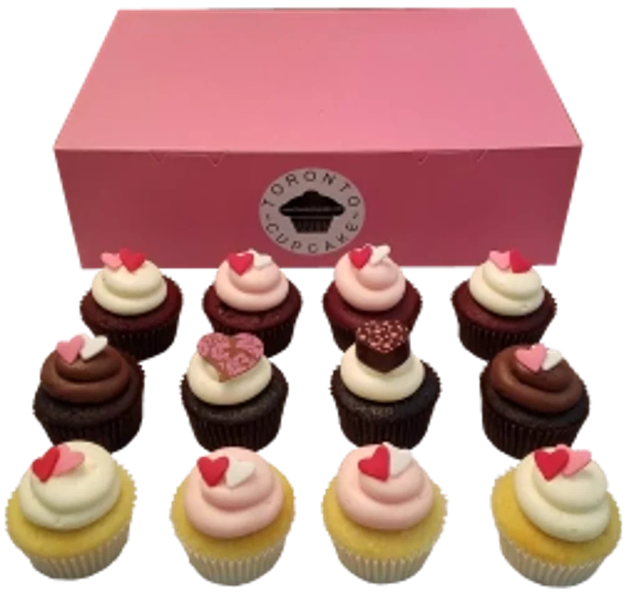

Valentine's Day
A dozen cupcakes for your cupcake.
Strawberries, chocolate, hearts, flowers, and beautifully boxed Valentine's Day cupcakes.
$48 / dozen

Native page content
Original details, redesigned for scanning.
A dozen cupcakes for your cupcake!!
A dozen cupcakes for your cupcake!!
Spoil your sweetie this Valentines Day! Toronto Cupcake is bringing together strawberries, chocolate, hearts, and flowers all on delicious cupcakes. Please be aware that we get very busy during this time of year so ordering early for Valentine's Day delivery is advisable. We have designed and packaged a delicious selection of dozen, half dozen, and single Valentine's Day Cupcakes. Beautifully boxed and decorated these cupcakes come with an enevelope, card, and your personal message.
Home About Cupcakes Corp Events Occasions Giving Back FAQs Resources Contact Us Cupcake Delivery Employment Privacy Policy
Toronto cupcakes
now deliver cupcakes throughout the GTA and beyond.
Cupcakes are delivered to Toronto and the GTA
, Markham, Scarborough, Etobicoke, Mississauga, Barrie, New Market, Brampton, Caledon, Oakville, Burlington, Hamilton, Milton, Richmond Hill, Aurora, Whitby, Pickering, Vaughan and other locations around the GTA. The Toronto Cupcake bakery, is most famous for its delicious gourmet cupcakes.
Toronto Cupcake
cupcakes are the perfect gift for any special occasion including birthdays, weddings, graduations, anniversaries, and corporate events.
- We have helped many public relations, marketing, and individual companies by providing innovative approaches to branding using cupcakes and confections. For example, we can reproduce your clients logo and your logo on cupcakes and then display them in a way that promotes the thought of partnership.
Weddings
- we pride ourselves on making your day as special as we can. If you want a very special cupcake display we will go the extra effort to give you a beautiful display.
Graduations
- Toronto Cupcakes have all kinds of themes to use for that proud graduation moment.
Anniversaries
- whether its your 1st anniversary or your 50th anniversary we create a motif that excites and displays a level of commitment you will love.
Birthdays
- For the kids in all of us, we have character themes - sesame street, angry birds, sports, or other cartoon characters. For adults - if you have an idea we will make it happen.
Toronto cupcakes cupcakes near Toronto cupcakes in Toronto delivery best cupcakes in Toronto best cupcakes in Canada
Toronto's Best Cupcakes - Toronto cupcake - Toronto cupcakes - delivery
Ready when you are